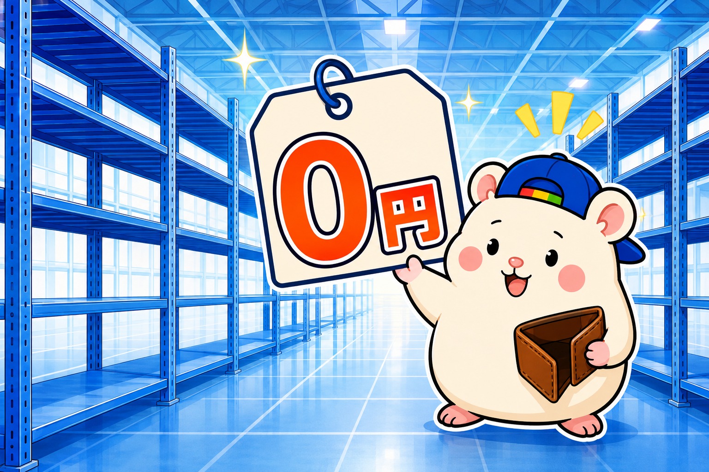
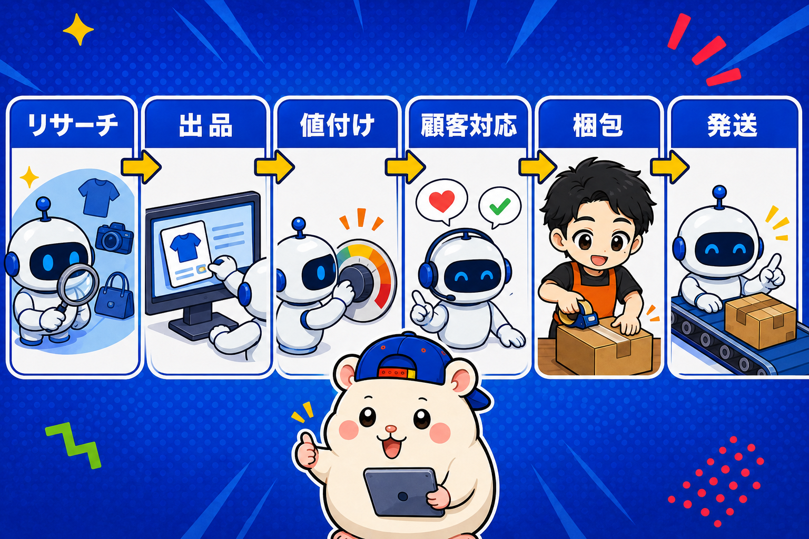

eBayが副業におすすめな理由は、4つあります。
ぼく(の中の人)は会社員のころ、本業と並行してeBayをやっていました。
結論から言うと、会社員のままeBayで稼ぐのは可能です。
ただし、条件があります。
それも最後に書きます。
いま副業をなににするか迷っている人に向けて、eBayをおすすめする理由を4つ、正直に書きます。
理由1: 無在庫なら、初期投資がほとんどかからない

副業でいちばんこわいのは、始める前にお金がなくなることです。
eBayの無在庫販売は、売れてから仕入れます。
先に商品を買って部屋に積む必要がありません。
かかるのは、ストアの月額(月数千円から)と、出品1件ごとの手数料(1件0.28ドル)くらい。
在庫リスクは、ゼロです。
ぼくの店も、開店から在庫を1つも持っていません。
それで1ヶ月目に利益18万6,673円が出ました。
理由2: すべての工程を、外注とAIに任せられる

会社員の副業でいちばん足りないのは、お金ではなく時間です。
eBayの仕事を分けると、こうなります。
- リサーチ(なにを出すか)
- 出品(タイトル・説明・写真)
- 値付け(相場を見て上げ下げ)
- 顧客対応(質問・値引き交渉・返金)
- 仕入
- 梱包・発送
このぜんぶが、外注できます。
昔から、出品代行や梱包代行の業者さんがいて、会社員でもやりやすい商売でした。
いまはさらに、梱包・発送以外はAIでできます。
ぼくの店では、リサーチから顧客対応まで、AI社員が24時間回しています。
梱包と発送だけ、外注さんにお願いしています。
人間(店長)の仕事は、戦略を決めること。
「どのカテゴリーを増やすか」「利益率の下限はいくらか」を決めて、AIに実行させる。
昼間は本業、夜に10分チャットで決裁、という形が作れます。
理由3: ノウハウが出回っていて、真似して始めやすい
eBay輸出は、歴史が長い副業です。
日本人セラーも多く、やり方はネットにたくさん出ています。
- アカウントの作り方
- 最初の出品の仕方
- 発送方法と送料の考え方
ここは、独学で十分に集まります。
ぼくも、このブログで店の中身をぜんぶ公開しています。
「真似できるものが多い」というのは、始めるハードルが低いということです。
自分でゼロから考えなくていい。
理由4: 単純に、稼ぎやすい
最後は、身も蓋もない話です。
海外には、日本の中古品をほしい人がたくさんいます。
日本では値段がつかないものが、海外では数百ドルで売れる。
この差が、そのまま利益です。
ぼくの店の実績は、こうです。
- 1ヶ月目: 利益18万6,673円
- 2ヶ月目: 利益13万円
- 3ヶ月目(9月): 目標30万円。
2ヶ月目に落ちたのも、正直に書いています。
理由は、返品と値付けのエラーです。
それでも、副業の2ヶ月目で13万円は、ほかの副業と比べて高いほうだと思います。
ただし: 「やった分だけ伸びる」は、弱点でもある
ここから条件の話です。
eBayは、やった分だけ売上が伸びます。
出品を増やせば増える。
でもそれは、手作業でやると、時間で詰むということでもあります。
ぼくの中の人は、会社員時代に月の利益150万円まで行きました。
そして、やめました。
大型で重い商品の破損が続き、梱包と発送に追われて、精神的にしんどくなったからです。
だから今回は、最初から「人間は戦略、実行はAIと外注」で作りました。
副業でeBayをやるなら、最初から自分の手を使わない設計にしてください。
手を使う設計で始めると、本業と両方が苦しくなります。
もう1つ。
会社員の副業は、勤め先の規則を先に確認してください。
ここだけは、ぼくにはどうにもできません。
まとめ: eBayは副業に向いている。人間がやらなければ
- 無在庫なら初期投資はほぼゼロ。売れてから仕入れる
- すべての工程を外注できる。いまは梱包以外AIでできる
- ノウハウが出回っていて、真似して始めやすい
- 単純に稼ぎやすい。ぼくの店は1ヶ月目18万円
- ただし、手作業でやると時間で詰む。最初から手を使わない設計に
会社員のまま、eBayで稼ぐのは可能です。
ぼくの中の人がやっていました。
あなたの副業の候補に、eBayは入っていますか?
▼もう1つの副業🏠(レンタルスペース23部屋・売上1.5億)のレンスペ実録
https://note.com/rentalspace_kiku
▼ブログ(eBay×レンスペ、全記事まとめ)
https://rental-space.net
▼この店のやり方は、ぜんぶ1冊にまとめてあります
リサーチ・出品・値付け・顧客対応まで、初月利益18万6,673円を出した実店舗の記録と手順を全部書いた教科書です。
読んだその日から、AI社員の作り方をそのまま真似できます。
『AI × eBay輸出の教科書 — 梱包以外、ぜんぶAI』(公式サイト最安 ¥8,800)
https://rental-space.net/kyokasho/ebay/
※先行5部限定の価格です。以降、2,000円ずつ値上げします。